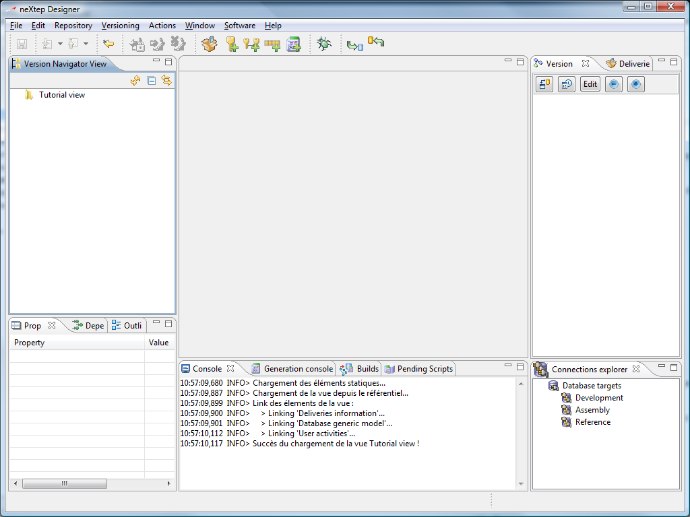

When you first start Designer, the workbench will look like the screenshot below.

The left hand side is the navigator view. It shows the view contents (nothing yet) and allows you to navigate in the view. Underneath you will find properties / dependencies and outlines whose contents will depend on the current selection.
The central bottom part is composed of several monitoring views : the console, the generation output console, builds, and pending synchronization scripts.
The right hand side part is split in 2 : on top you will find the version editor view which displays the version information and a version tree overview, and below is the connection explorer which shows you connections to your development databases.
Further information about each view will be provided along this tutorial, when needed. You can also go to the Concepts section to read for a complete description of each view or action.
The central area is dedicated to editors. This is
where editors will be opened when you double click on any view
element.